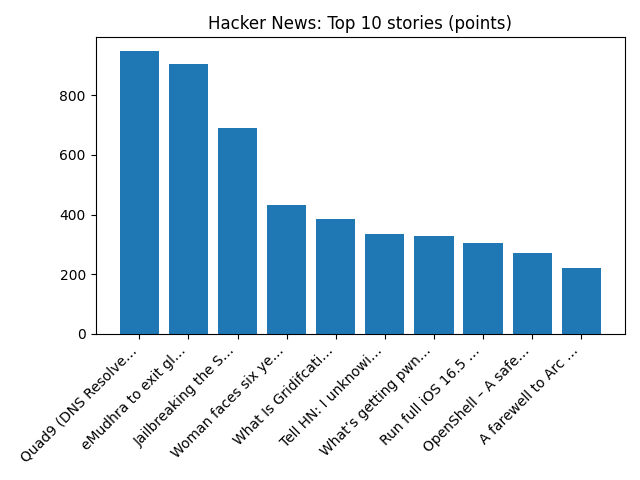

YOUR DAILY INTELLIGENCE BRIEF · 2026-10-22
The world, in focus.
No recent news coverage available.
🌍 Global coverage
🌌 Beyond Earth

The First Green Star, WD J1330+6435
📜 On this day
- 2019 Same-sex marriage is legalised, and abortion is decriminalised in Northern Ireland as a result of the Northern Ireland Assembly not being restored.
- 2015 Anton Lundin Pettersson attacks a school in Trollhättan, killing three people and injuring two others.
- 2014 Michael Zehaf-Bibeau attacks the Parliament of Canada, killing a soldier and injuring three other people.
- 2013 The Australian Capital Territory becomes the first Australian jurisdiction to legalize same-sex marriage with the Marriage Equality (Same Sex) Act 2013.
📈 Topic activity
Source health: 24/24 healthy
View original detailed report
Daily Knowledge Garden — 2026-10-22
🧭 Daily Summary
Global coverage includes Appeals court lifts block on Mississippi's DEI ban, ejects judge over AI errors - Reuters; Trump says wind turbine imports threaten national security - Reuters; Firefighters and public 'knowingly put at risk' during summer wildfires. Local coverage includes Amazon explains shift in position on future data center developments in Northern Va. - WTOP News; Real estate giant Akelius offloads three N. Virginia apartment buildings for more than $230M - The Business Journals.
🌍 Global News (cross-source)
- Appeals court lifts block on Mississippi's DEI ban, ejects judge over AI errors - Reuters — Reuters — Headlines (Google News)
- Trump says wind turbine imports threaten national security - Reuters — Reuters — Headlines (Google News)
- Firefighters and public 'knowingly put at risk' during summer wildfires — BBC — Science
- Zuckerberg wins Meta deal to help him foot bill for possible California billionaire tax — BBC — World
- Powerful Democratic Virginia state Sen. Lucas is accused of leading a marijuana criminal conspiracy - AP News — AP — Headlines (Google News)
🏙️ Local News
- Amazon explains shift in position on future data center developments in Northern Va. - WTOP News — Google News — Northern Virginia
- Real estate giant Akelius offloads three N. Virginia apartment buildings for more than $230M - The Business Journals — Google News — Northern Virginia
- Investing in the Future of Jewish Northern Virginia: Meet Federation’s Third Leadership Cohort - Jewish Federation of Greater Washington — Google News — Northern Virginia
- Reston Couple, Inova Honored by Community Foundation for Northern Virginia - Northern Virginia Magazine — Google News — Northern Virginia
- Amazon cancels plan for data centers in Loudoun County, donates land - The Washington Post — Google News — Northern Virginia
🚀 Hacker News (Top 5)
- Compromised LiteLLM 1.107.0 on PyPI Installs a Credential Stealer and Backdoor — 562 points, 183 comments
- Security Disclosure — 531 points, 305 comments
- Claude Duet — 470 points, 439 comments
- No more icons in every menu by default — 397 points, 229 comments
- PingCap TiDB Leaks — 390 points, 66 comments

🌍 Wikipedia — On This Day (selected)
- 2019 — Same-sex marriage is legalised, and abortion is decriminalised in Northern Ireland as a result of the Northern Ireland Assembly not being restored.
- 2015 — Anton Lundin Pettersson attacks a school in Trollhättan, killing three people and injuring two others.
- 2014 — Michael Zehaf-Bibeau attacks the Parliament of Canada, killing a soldier and injuring three other people.
- 2013 — The Australian Capital Territory becomes the first Australian jurisdiction to legalize same-sex marriage with the Marriage Equality (Same Sex) Act 2013.
- 2012 — Cyclist Lance Armstrong is formally stripped of his seven Tour de France titles after being charged for doping.
🎲 Wikipedia — Random Article
J. Y. T. Greig
He was born in Manchuria where his father was a Presbyterian missionary. His 1931 biography of Hume won the James Tait Black Award, and he also edited Hume's letters.
https://en.wikipedia.org/wiki/J._Y._T._Greig
🌌 NASA APOD
The First Green Star, WD J1330+6435
Feed Health
- Reuters — Headlines (Google News): ok (15 articles)
- Reuters — World (Google News): ok (15 articles)
- Reuters — Business (Google News): ok (15 articles)
- BBC — World: ok (15 articles)
- BBC — Tech: ok (15 articles)
- BBC — Business: ok (15 articles)
- BBC — Science: ok (15 articles)
- AP — Headlines (Google News): ok (15 articles)
- AP — Politics (Google News): ok (15 articles)
- AP — Business (Google News): ok (15 articles)
- NPR — Top Stories: ok (10 articles)
- NPR — Politics: ok (10 articles)
- NPR — Business: ok (10 articles)
- NPR — Science: ok (10 articles)
- NPR — Technology: ok (10 articles)
- ScienceNews: ok (15 articles)
- ScienceDaily — Top: ok (15 articles)
- Nature — Technology: ok (15 articles)
- Google News — Northern Virginia: ok (15 articles)
- Google News — Northern Virginia traffic: ok (15 articles)
- Google News — Northern Virginia weather: ok (15 articles)
- Wikipedia — On This Day: ok (10 articles)
- Wikipedia — Random: ok (1 articles)
- NASA — APOD: ok (1 articles)
Runs so far today: 3